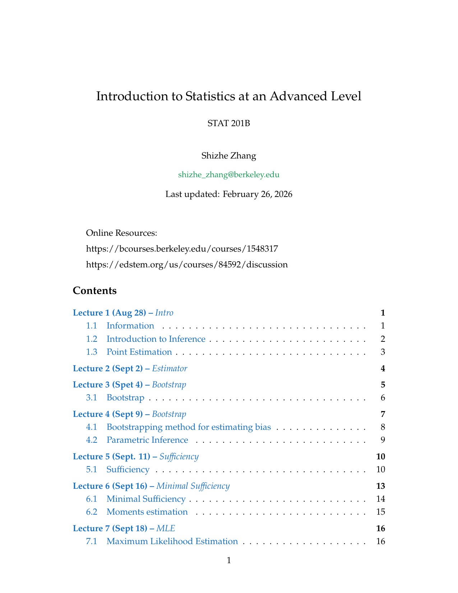
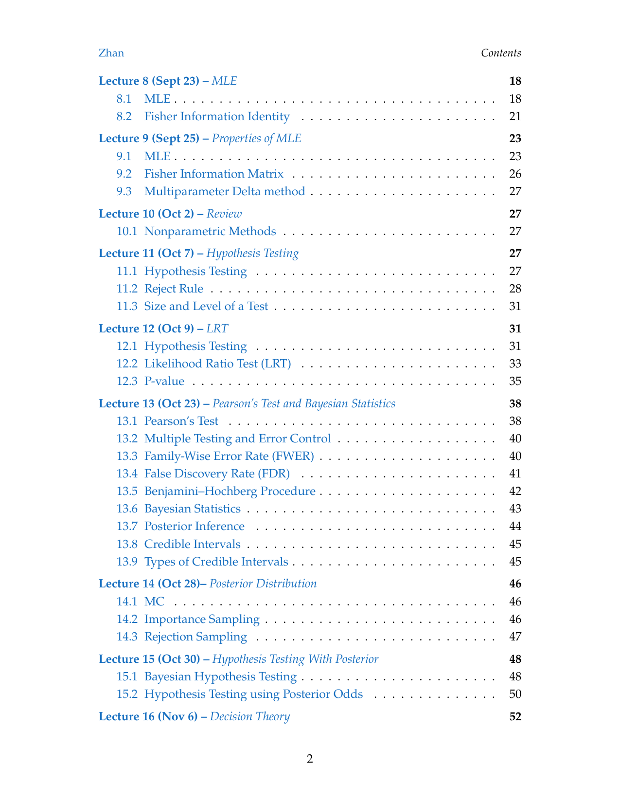
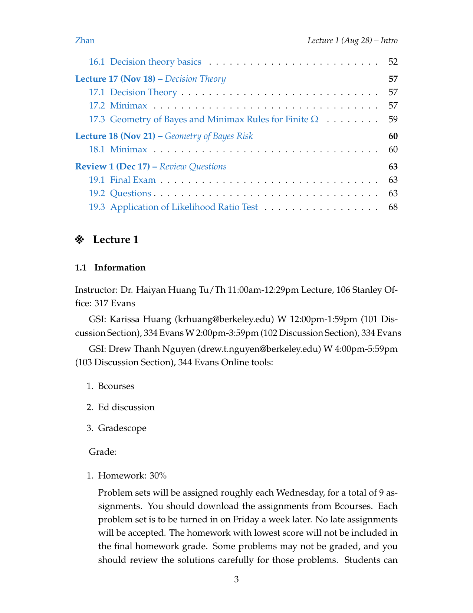

STAT 201B: Introduction to Statistics at an Advanced Level

These are my personal study notes for the STAT 201B course at UC Berkeley. The notes cover fundamental and advanced statistical concepts, ranging from axiomatic foundations of inference to decision theory and Bayesian statistics.
// Resource Archive
Course Highlights
The notes are structured by lecture and include rigorous mathematical derivations, examples, and computational snippets in Python.
1. The Bootstrap Method
The Bootstrap is a powerful non-parametric tool for estimating the sampling distribution of an estimator by resampling with replacement from the original data.
\[ \hat{V}_{boot} = \frac{1}{B} \sum_{j=1}^B (T_{n,j}^* - \bar{T}_n^*)^2 \]
2. Maximum Likelihood Estimation (MLE)
Detailed analysis of MLE properties, including consistency, asymptotic normality, and efficiency.
\[ \sqrt{n}(\hat{\theta}_n - \theta) \xrightarrow{D} N(0, 1/I(\theta)) \]
3. Bayesian Inference & Decision Theory
Coverage of posterior distributions, conjugate priors, and decision-theoretic frameworks such as Minimax and Bayes rules.
\[ f(\theta|x^n) = \frac{f(x^n|\theta)f(\theta)}{f(x^n)} \]
Example Pages from the Notes


Detailed Lecture List
- Lecture 1-2: Introduction to Inference & Point Estimation
- Lecture 3-4: The Bootstrap & Parametric Inference
- Lecture 5-6: Sufficiency & Minimal Sufficiency
- Lecture 7-9: MLE Properties & Fisher Information
- Lecture 11-12: Hypothesis Testing & Likelihood Ratio Tests
- Lecture 13-15: Bayesian Statistics & Posterior Distribution
- Lecture 16-18: Decision Theory (Minimax, Bayes Risk)
// Insight
Statistical inference is essentially the art of “reversing” the generative process—using observed data to uncover the hidden parameters that produced it.